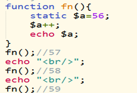

原文连接:https://www.cnblogs.com/yanghuiting/p/10679553.html
PHP
简介：
php ：是一门动态交互的计算机语言 静态交互 html css js
但凡是动态交互的 都需要服务器。
php都是以.php结尾的文件
Html文件里不能写php代码，但是php文件里可以写Html代码
PHP模板
Html该怎么写还怎么写，但是php代码写在<?php ?>里面
语法
php代码写在<?php 里面放php代码 ?>
php的注释 // /**/ 快捷键：ctrl+？
php的输出语句 echo print
变量：
变量的命名：
以$符开始
变量的标志：$
变量的规则：
1、变量以$符号开始，后面跟着变量的名称
2、变量名必须以字母或者下划线字符开始
3、变量名只能包含字母、数字、字符或下划线
4、变量名不能包含空格
5、变量名是区分大小写的
变量的赋值
使用=等号就是赋值运算，从右往左读，
$2=2，本质上来说，是存放2的数据空间的地址赋值给变量a；
变量的主要功能是基本数据类型，php会默认把地址和数据空间为一体直接赋值给变量a，
基本数据类型的赋值可以直接忽略地址，直接操作数值
如果我就想把地址赋值给变量，我们需要在再前面加上一个地址符&，他的赋值就是操作地址不再是操作值
变量的作用域
1、全局 global
函数外的都是全局作用域
2、局部 local
函数内部的都是局部作用域
变量的作用域和js作用域的区别：
js有作用域链，php没有；php中的全局作用域不能访问局部的，局部也不能访问全局的，如果需要访问需要手动操作
作用域的四个关键字：
global（全局的）、local（局部的）、static（静态的）、parameter（参数）
global：局部想要访问全局变量，在局部变量前加关键字 global
static：函数调用完毕之后，会自动消除内存，但有时我们需要函数内部的一个变量内存不被销毁，js使用闭包就可以实现了，php使用static就解决了

parameter ：所有的参数作用域都是局部的
Isset() 判断变量是否设置（赋值）还回的是Boolean
php的数据类型
String、int(整形)、float、boolean、Array、Object、null
基本数据类型：String、int、float、boolean
复合数据类型：Array、Object
数据类型针对变量，php是弱类型语言，是什么类型跟你声明的时候没有关系，跟赋值的时候有关
Var_dump() 还回变量的数据类型和值
字符串：
1、并置运算
js中叫拼接，用+
php中叫并置，用 . 运算
注意：php的汉字出现乱码，我们需要在php的第一行添加
header("Content-Type: text/html;charset=utf-8");
2、strlen() 返回字符串的长度
一个字母一个字符长，一个汉字3个字符长
运算符
四则运算：+、-、*、/
赋值运算：$a+=2; 等价于$a=$a+2
自增自减：$a++、++$a、
比较运算符：
==（等于）、===（全等）、!=（不等于）、!==（绝对不等于）、>（大于）、<（小于）、>=（大于等于）、<=（小于等于）
==（等于）主要用于判断
逻辑运算：||（或）、&&（且）、!（非）
|| ：有一个为true 就返回true；
&&： 都得为true 才返回true
三元运算：又称三日运算，条件?echo1:echo2
求余运算：%，
条件语句
if else
单条语句：
$name=56;
if($name<23) echo "hello world3333";
多条语句
switch
循环语句
for
while
do while
do while与while的区别：
While是先判断后执行，do while 先执行后判断
for each
for each针对关联数组的
Array(“name”=>”zhang”,”age”=>12) 这种写法我们叫关联数组
Php中没有json格式，但是对于前端来说，要json格式。
Php提供了一个方法叫 json_encode() 将数据转换成json格式

数组：
1、数组
$arr=[“zhang”,”li”] $a=array(“yuan”,”ni”)
2、关联数组
$arr=array(“name”=>”zhang”,”age”=>56)
3、多维数组
获取数组长度的方法：count()
Is_array() 判断一个变量是不是数组
函数：
php自定义函数和内置函数
使用关键字function 定义函数
function () {}；fn() 函数调用的时候会开辟内存空间 里面有栈和堆 调用完毕之后这个内存就被销毁。销毁顺序是先进后出 先进去的后销毁 后进去的先销毁。
函数作用域
四个关键字 global static local parameter
Global 的变量都会存在php中一个叫$GLOBALS的数组中
函数的参数
1、参数传参
2、默认参数
如果传的有默认参数和普通参数同时传 需要注意顺序问题
3、引用传参
将变量的地址传进去，函数内部如果修改了这个地址里的值 函数外也会跟着改
在js中函数自身有一个arguments的属性，叫实参构成的数据集合
Fun_num_args() 获取实参数的个数
Fun_get_agrs() 获取实参构成的集合
还回的是一个数组
Fun_get_arg(index) 获取具体的某一个参数
递归函数
函数内部调用函数本身